Acerca de
Bienvenido a mi espacio personal y profesional. Aquí podrás conocer dos aspectos clave de mi vida, quien soy y qué hago
Nuria Liaño
Cántabra por encima de todo, amante del café, la cerveza y el metal
Una Nuria de apenas 3 años, aún en pañales, ya mostraba un gran interés por una caja enorme (en ese momento para mí) que tenía mi tío en casa, recuerdo que cuando el trabajaba me sentaba en una silla al lado para ver que hacía y así aprendía a manejar esa "caja mágica".
De pequeña mis juguetes solían ser ordenadores rotos, que desarmaba y volvía a armar para entender por que no funcionaban y arreglarlos, así conseguí mi primer ordenador. Un "Frankenstein" al que le costaba arrancar, sin sistema operativo ni conexión a internet. Gracias a esto descubrí el mundo GNU/Linux y con ello mi amor por la administración de sistemas ya que mi entretenimiento era "pegarme" con una terminal y comandos que iba aprendiendo gracias a mi tío.
A los 15 años, mientras cursaba FP Grado Medio SMR, comencé sin saberlo en mi andadura en la formación, me di cuenta que me gustaba tanto investigar tecnologías como explicarlas y empecé a impartir clases en una academia. Posteriormente he cursado FP Grado Superior ASIR, DAM y DAW, y además, el Grado Universitario de Ingeniería Informática.
La mayoría de mis hobbies, por suerte o por desgracia, están relacionados con la informática. Me gusta crear proyectos tanto de software como de hardware y realizar todos los procesos manualmente. Mi único hobby no relacionado con la informática es el deporte, me encanta practicar cualquier tipo de deporte pero sobre todo ciclismo y fútbol (aun que a veces también paso por el gimnasio).
NuriaLiaño nace como proyecto de marca personal hace más de 10 años, mi principal objetivo era encontrar una forma de diferenciarme del resto de mis compañeros através de un elemento que me representase.
El logotipo de NuriaLiano "NL" nace de mis iniciales "Nuria" y "Liaño" pero con el caracter de la "N" en espejo, ya que suele resultar curioso, o incluso enfadar a mis profesores de primaria, que siempre escriba las N en espejo.
Con el tiempo el propósito de "NuriaLiano" ha ido madurando y dando forma a lo que es hoy en día. Al inicio ofrecía servicios de compra/venta de equipos de segunda mano y reparación de equipos, sumé el servicio de administración de sistemas y desarrollo web para empresas de Cantabria y por último he implementado el servicio de formación y documentación.
El concepto de "NuriaLiano" no es ser una empresa y ofrecer servicios, si no agrupar todos mis proyectos y ofrecerlos de forma pública bajo una marca diferente. Por este motivo "NuriaLiano" es mi proyecto principal, una imagen de mi maduración profesional y de mi desarrollo personal.
Servicios
Explora la sección de servicios para descubrir cómo puedo ayudarte.
Formación
Administración de sistemas
Documentación
Desarrollo de aplicaciones web
Mantenimiento de equipos
Venta de equipos
Proyectos
En esta sección puedes echar un vistazo a todos los proyectos que he ido realizando tanto para empresas, como para mi uso personal y laboral.
Skilly
Plataforma de formación online que ofrece una amplia variedad de cursos y recursos educativos sobre distintos áreas de la informática.
Nuridocu
"Baúl de conocimientos" Página web de documentación sobre diversas tecnologías y áreas de la informática

Focus Monitor
Proyecto final de DAW basado en monitorización de servidores y servicios del CPD de la Universidad de Cantabria

TakeThisHost
Proyecto final de ASIR basado en el despliegue y gestión, sobre AWS, de una empresa de hosting web y VPS. Implementa una web para dar de alta los servicios y manejarlos

GitRepos
Script desarrollado en Python para automatizar la creación y eliminación de repositorios en "mirror" tanto en Gitlab como en Github
Confitería Milhojas
Página web para desarrollada en HTML/CSS/JS para una confitería en Cantabria

Antaviana Cantabria
Página web para desarrollada en HTML/CSS/JS para un hotel en Cabezón de la sal, Cantabria
La niña
Página web para desarrollada en Wordpress para un hotel en Cartes, Cantabria
Contacto
Información de contacto
Si quieres contactar conmigo para contratar formación, realizar algún proyecto, consejo informático o presupuesto de compra o reparación (o echarnos unas cerves) puedes enviarme un email o un mensaje por cualquiera de mis redes sociales.
hola@nurialiano.com